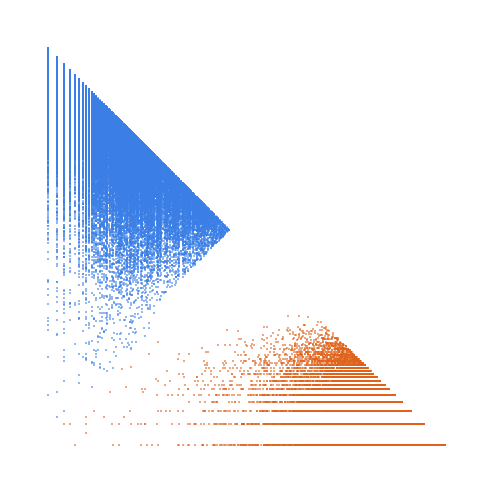

Numbers m such that 3*m^2-5 is a prime

Open in the 3-D viewerA268577 on the OEIS
| Terms | 100,000 (n = 1 … 100,000) |
|---|---|
| Decomposable (a > 2d) | 99,997 |
| Level class, k > L | 21,734 · 21.73 % |
| Weight class, k ≤ L | 78,263 · 78.27 % |
| Ties, k = L | 2 |
| On the level line L = 1 | 0 |
| Forced level, l ≤ d² | 16 |
| Range of a(n) | 2 … 2,051,798 |
| Range of the jump d | 2 … 220 |
| Largest weight k, level L | 1,025,561, 683,868 |
93 different gaps occur, from 2 to 220; the level share is 21.73 %; L = 2 holds 35 % of the level class.
The decomposition
Every term of a strictly increasing sequence is written a(n) = k(n)·L(n) + d(n): the jump d = a(n+1) − a(n), the weight k the least divisor of a − d greater than d, the level L = (a − d)/k. A term decomposes when a > 2d; it is in the level class when k > L and in the weight class when k ≤ L. See decompwlj.com and arXiv:0711.0865.